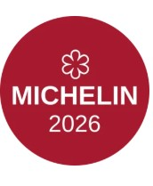
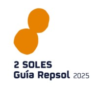
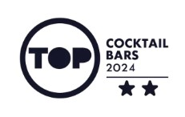
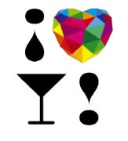
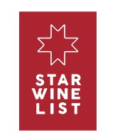
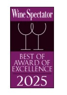

HAZ TU RESERVA ANTES DEL 14 DE FEBRERO Y CONSIGUE UN 15% DE DESCUENTO






El Rincón, galardonado con una estrella Michelin y dos Soles Repsol, abrió sus puertas con el objetivo de convertirse en un clásico contemporáneo de la restauración.
RESERVA AHORAEl restaurante, situado en el mismo emplazamiento del mítico hotel «Gloria Palace *****», se distribuye en dos plantas, brindando una variedad de opciones para satisfacer las diferentes necesidades de cada cliente, a través del bar, centrado en la coctelería, la sala principal, y sus cinco reservados que ocupan toda la planta superior del restaurante.
El Rincón ofrece una experiencia culinaria en la que destaca el respeto por los productos de temporada y sus productores, y la maestría en la mezcla de técnicas clásicas y contemporáneas, tanto en el servicio como en la cocina.